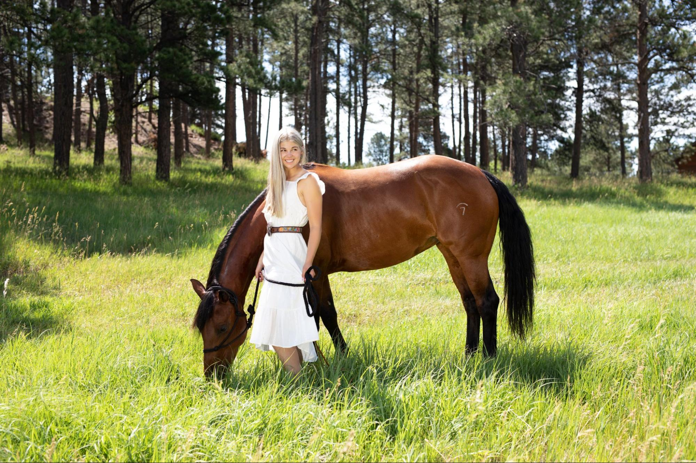

Garvon G.
"After only 4 classes, I can now speak, read, and understand basic Spanish!! And it's really fun!"
Kira W.
"By the class being more engaged and less English dependant, I believe that learning Spanish has been easy. It's not boring powerpoints or drills, rather it's more various fun activities. Sra. has made the class very enjoyable and friendly from the fun story activities to the various games."
William G.
"It's not drills, rather it's all verbal and it works, it really does. I learned more in this class than in any previous class including elementary and middle school, Duo Lingo, and whatever other program my mom gave me to learn."
Preston O.
"I hardly knew anything at the start and now I know a lot! I was able to comprehend and speak a lot of Spanish I never knew. I learned a lot in such a short time. I think it is easy to learn and i am impressed at my knowledge. I can kind of show off by translating different words and saying things for fun in Spanish."
Gavin R.
"I learned unexpectedly faster than I thought. Now, I am speaking full sentences with ease."
Dhruv G.
"I learned lots of Spanish and I feel confident that I speak and understand, and the games were fun!"
Keigan B.
"Previously, I learned like 3 words, and I feel like now I've advanced at astronomical levels because I can hold a conversation which I didn't expect at all. I assumed I wouldn't be good at language and at my job this summer I was able to talk through a transaction in Spanish with a customer who only spoke Spanish! I genuinely enjoy learning spanish and I think it's fun."
Jace D.
"I can understand and speak a lot more than I ever thought I would..the way she taught made it easy."
Maia R.
"Sra. puts a lot of passion and time into our learning to make sure we enjoy each class. I think her method of teaching is easy to understand and memorable and I can express myself and pull words from my brain pretty easily now."
Devyn B.
"I liked doing interactive games and activities and I can speak, read and write well in Spanish which makes me more confident to travel."

Sophia M.
"I didn't know any Spanish coming into this class and now I can read, write, and speak at a fully comprehensible level! I feel confident that I can easily have a conversation in Spanish with anyone if I were down in Mexico traveling. Sometimes, i even catch myself thinking in Spanish and it's fun!"
Jason A.
"I have been able to say more and more with each class and I love learning in this way. I feel at ease and can say what I want to say."
Nate C.
"It is much easier to learn than I thought it would be and the fun activities made lots of happy moments cause the stories are sometimes really super funny"
Jayda B.
"This is the best learning experience!! Sra. made it fun to learn, so I wanted to learn fast and then i was amazed to find out how much I've learned."
Tom S.
"I learned in a few short weeks in Sra Goodey's class more than a whole year in another class."
Emilia M.
"What I've learned in this class is so much more than I thought. I am definitely father along with understanding Spanish than I thought I would ever be. I can speak full paragraphs and explain my feelings and understand what others say. Senora is spunky and energetic and it's a fun class with creative ways to learn."
Declan D.
"In Sra's class, it feels like you are having fun and not 'learning' a whole new language because it doesn't feel like work, yet I learned so much!"
Alexa S.
"It's immersion Spanish, and no learning through a textbook, so when we are speaking and interacting, I learn the words and vocabulary more quickly...which is so much better cause this way has helped me really learn. I am learning how to speak spanish to use it on a trip or future career."
Holden G.
"I learned more by the end of the month than I learned in a previous year in a school."
Dorian S.
"I learned faster than I thought I ever could and I think it's because of all the real life stories, and also because it was fun, the class was never dull and it has been a fun process, and learning has been so much easier than I ever thought it would be."
Isaac T.
"The Spanish taught in this method avoids the technicalities of other courses and enables you to apply it and use the language. I was not sure of what to expect, but I am pleasantly surprised about how much I know now."
Sloane K.
"Spanish was way easier than I thought because it was super fun with all the stories and games that made you talk. Now when I see Spanish on tv, I can translate it! I really do think I understand Spanish to a good intermediate level and this is my first class."
Kolby D.
"I had a Spanish teacher before Sra. who taught completely differently and I came away with nothing. There are many activities we do in Spanish with a target set of vocabulary that makes me learn and remember the context easily. After Sra's class, I feel confident to hold a conversation with anyone in Spanish."
Haley G.
"I never thought I would be able to comprehend as much as I am able to understand! I thought Spanish would be just memorizing vocabulary, but it was so much different because it doesn't feel like I'm working hard at learning, and the next thing I know, I'm comprehending."
Claire W.
"The interactive activities in this method have made it so much easier to learn. It benefitted me because I can understand Spanish when it's spoken at movies/shows, and in my family when my grandpa speaks."
Hannah H.
"I thought I would never be able to learn anything in Spanish and now I can actually understand and speak the language."
Connor R.
"The class has been more interactive than any other Spanish apps or classes I have tried to learn with, and I learned more here than with others ways."
Leonida B.
"I like the stories we create, and it's fun and adds creativity and I learn the words better and I'm better at telling people things in Spanish cause I can actually remember words. I've been able to retain what I learn from this class and I enjoy the level of creativity that is brought out in the class. I know I understand all that is said and so much more than i thought I would, so it's pretty impressive."